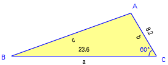

Law of Cosines
In any triangle, given two sides and the included angle, the third side is given by
the Law of Cosines formula:
c2 = a2 + b2 – 2ab cos(C)
Try this
Drag any vertex of the triangle. Note that the length of the unknown side c is continually recalculated using the Law of Cosines.
See also Law of Sines
The Law of Cosines is a tool for solving triangles. That is, given some information about the triangle we can find more. In this case the tool is useful when you know two sides and their included angle. From that, you can use the Law of Cosines to find the third side. It works on any triangle, not just right triangles.
The Law of Cosines is written formally as
c2 = a2 + b2 – 2ab cos(C)
where a and b are the two given sides, C is their included angle, and c is the unknown third side. See figure above.
To illustrate, press 'reset' in the diagram above.
Note that side a has a length of 30, and side b has a length of 18.9.
Their included angle C is 58°.
By plugging these into the Law of Cosines we get a length of 25.6 for the the third side c.
As you drag the above triangle around,
this calculation will be updated continuously to show the length of the side c using this method.
Example
We are given a triangle with two sides (a,b) and the included angle C, as shown below.
We will find the third side.

- We start with the formula:
-
Insert the values for a,b and C:
-
Evaluate the right side:
-
Finally we get
Giving us the length of the third side c.
Proof
See Proof of the Law of Cosines.
Things to try
In the figure at the top of the page:
- Click "hide details' then reshape the triangle by dragging its vertices.
- Find the length of side c using the Law of Cosines
.
When done, click on 'show details' to verify your answer.
Other triangle topics
General
Perimeter / Area
Triangle types
Triangle centers
Congruence and Similarity
Solving triangles
Triangle quizzes and exercises
(C) 2011 Copyright Math Open Reference.
All rights reserved